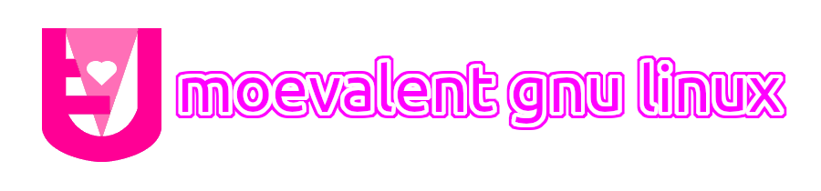

|  |
| 萌えは地球を巣食う！！ |
| トップ | | | Moevalentについて | | | ダウンロード |
| About Moevalent |
|
桃色には幸せ、愛、安らぎ、優しさ、可愛らしさといったイメージがあります。 Moevalentはそんな愛と優しさに溢れた可愛らしいOSを目指しています。 |
| 特徴 |
|
● 長期サポート版カーネルを採用。少し古いが安定している。 ● RAM使用量が比較的少ない。 ● 桃色を基調とした「Moe-Pink」テーマを採用。 ● 外観や操作感はMS-Winみたい。 ● Archベースだから常に最新のソフトウェアを使える。それゆえ不具合の原因にもなりえるが…。 ● 様々なソフトウェアを同梱してあるので、導入直後から実用可能。 ● Arch User Repositoryのパッケージの導入を助けるプログラムを同梱。 ● ブラウザー、オフィス統合、メディアプレイヤーなどのソフトウェアを最初から搭載。 ● 「UniFetch」(Neofetchからの分岐)でシステム情報を開示。 ● Univalentを使い易くする対話型シェルスクリプト「Univalent Tools」を搭載。 ● 「add-pacman-repository」で外部リポジトリの追加もあら簡単。 ● 「wineinstall」でWineを楽に導入可能。 |
| それにしてもなんでArch？ |
|
一番の理由は「リポジトリの作成が楽だから」。だってArchには「repo-add」なんて機能が最初から備わっているんだもん。 それから常に最新のパッケージを使えるのがいい。ただ最新だから未知の不具合があるかも知れないんだが、まあ特に不具合を恐れないユーザーには最適だと思います。 |
| 主なソフトウェア |
| カーネル | Linux LTS |
| デスクトップ | LXQt |
| ウインドウマネージャー | Openbox |
| ディスプレイマネージャー | LightDM |
| ファイル管理 | PCManFM-Qt |
| 端末エミュレーター | Qterminal |
| WWWブラウザー | Floorp |
| メール管理 | Claws Mail |
| オフィス統合 | LibreOffice |
| 音楽再生 | Rhythmbox |
| 動画再生 | VLC |
| メモ帳 | L3afpad Vim |
| タスク管理 | KSysGuard |
| ソフトウェアセンター | Pamac (AUR対応版) |
| NJBトップ |
| ここに記載の画像などの著作権はそれぞれの製作者に帰属します。テーマなどの作成者に謝辞をお送り致します。 |